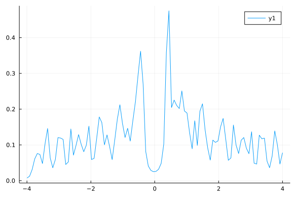

Solving Bogoliubov-de Gennes equations and Gap equations
Solving Bogoliubov-de Gennes equations and Gap equations¶
We consider two-dimensional s-wave superconductor.
using Pkg
Pkg.add(PackageSpec(name="RSCG",rev = "master"))
using RSCG
Updating git-repo `https://github.com/cometscome/RSCG.jl.git`
Updating registry at `~/.julia/registries/General.toml`
Resolving package versions...
No Changes to `~/.julia/environments/v1.7/Project.toml`
No Changes to `~/.julia/environments/v1.7/Manifest.toml`
using SparseArrays
function make_hamiltonian(Nx,Ny,Δ,μ)
N = Nx*Ny
H = spzeros(ComplexF64,2N,2N)
t = 1.0
ds = [(0,0),(1,0),(-1,0),(0,1),(0,-1)]
for ix=1:Nx
for iy=1:Ny
i = (iy-1)*Nx + ix
for d in ds
jx = ix + d[1]
jy = iy + d[2]
jx += ifelse(jx > Nx,-Nx,0)
jx += ifelse(jx < 1,Nx,0)
jy += ifelse(jy > Ny,-Ny,0)
jy += ifelse(jy < 1,Ny,0)
j = (jy-1)*Nx + jx
if jx == ix && jy == iy
H[i,j] += -μ
else
H[i,j] += -t
end
H[i+N,j+N] += -conj(H[i,j])
end
jx = ix
jy = iy
j = (jy-1)*Nx + jx
H[i,j+N] += Δ[ix,iy]
H[j+N,i] += conj(H[i,j+N])
end
end
return H
end
make_hamiltonian (generic function with 1 method)
function update_H!(H,Δ)
Nx,Ny = size(Δ)
N = Nx*Ny
for ix=1:Nx
for iy=1:Ny
i = (iy-1)*Nx + ix
jx = ix
jy = iy
j = (jy-1)*Nx + jx
H[i,j+N] = Δ[ix,iy]
H[j+N,i] = conj(H[i,j+N])
end
end
end
update_H! (generic function with 1 method)
function fit_ir(Gij,smpl_Matsubara,smpl_beta)
gl = fit(smpl_Matsubara, Gij)
G0 = evaluate(smpl_beta, gl)
return -G0[1]
end
function calc_Δ_ir!(Δnew,H,Δold,T,U,ωn,smpl_Matsubara,smpl_beta,;mixratio = 0.5)
Nx,Ny = size(Δold)
N = Nx*Ny
for ix=1:Nx
for iy=1:Ny
i = (iy-1)*Nx + ix
j = i + N
Gij = greensfunctions(i,j,ωn,H)
G0 = fit_ir(Gij,smpl_Matsubara,smpl_beta)
Δi = U*G0
Δnew[ix,iy] = (1-mixratio)*Δold[ix,iy] + mixratio*Δi
end
end
end
calc_Δ_ir! (generic function with 1 method)
function calc_ωn(T,ωc)
M = Int((round(ωc/(T*π)))/2-1)
println("num. of Matsubara freq: ",2M)
ωn = zeros(ComplexF64,2M)
for n=1:2M
ωn[n] = π*T*(2.0*(n-M-1)+1)*im
end
return ωn
end
function calc_Δ!(Δnew,H,Δold,T,U,ωn;mixratio = 0.5)
Nx,Ny = size(Δold)
N = Nx*Ny
for ix=1:Nx
for iy=1:Ny
i = (iy-1)*Nx + ix
j = i + N
Gij = greensfunctions(i,j,ωn,H)
Δi = U*T*sum(Gij)
Δnew[ix,iy] = (1-mixratio)*Δold[ix,iy] + mixratio*Δi
end
end
end
calc_Δ! (generic function with 1 method)
using SparseIR
T = 0.05
beta = 1/T
wmax = 10.0
basis = FiniteTempBasis(fermion, beta, wmax, 1e-7)
smpl = MatsubaraSampling(basis)
ωn = smpl.sampling_points .* (im * π/beta)
println("num. of Matsubara freqs. ", length(ωn))
smpl_beta = TauSampling(basis, [beta])
U =-2
itemax = 1000
μ = -0.2
Nx = 20
Ny = 20
Δ = ones(ComplexF64,Nx,Ny)
Δold = copy(Δ)
Δnew = zero(Δ)
H = make_hamiltonian(Nx,Ny,Δold,μ)
ix = Nx ÷ 2
iy = Ny ÷ 2
i = (iy-1)*Nx + ix
j = i
for ite = 1:itemax
calc_Δ_ir!(Δnew,H,Δold,T,U,ωn,smpl,smpl_beta)
#calc_Δ!(Δnew,H,Δold,T,U,ωn2)
update_H!(H,Δnew)
eps = sum(abs.(Δnew-Δold))/sum(abs.(Δold))
println("$ite $eps ",Δnew[ix,iy])
Δold .= Δnew
if eps < 1e-6
break
end
end
num. of Matsubara freqs. 30
1 0.1970941450229614 0.802905854977038 - 3.3707447604852677e-15im
2 0.15787367222265145 0.6761481592027586 - 8.456604908533454e-15im
3 0.12565203071853223 0.5911887699265828 - 1.1225505221320971e-14im
4 0.09961174961207714 0.5322994238191551 - 1.1733118685599134e-14im
5 0.0787871688287053 0.4903610543721911 - 1.490675936845626e-14im
6 0.062242824304836936 0.4598396113607263 - 1.761660072813988e-14im
7 0.04914993984103389 0.4372385151163103 - 2.0771180327996372e-14im
8 0.038810119776237155 0.4202692364399847 - 2.311888041543552e-14im
9 0.030651985623182432 0.40738715006834947 - 2.5817861402136618e-14im
10 0.024216595170865562 0.39752161804064007 - 2.9801769358129623e-14im
11 0.019139214485903746 0.38991336745265576 - 3.2848152926162245e-14im
12 0.015131784679532518 0.38401327933254426 - 3.508009852433558e-14im
13 0.011967282012055524 0.37941767760035705 - 3.7784817478843355e-14im
14 0.009467253743903703 0.37582562545531895 - 4.149994625362302e-14im
15 0.007491337243058872 0.3730101966067739 - 4.5207374561668766e-14im
16 0.00592899493524692 0.37079861641781187 - 4.7694875443649424e-14im
17 0.004693298966456891 0.36905835043463125 - 5.1112333053036796e-14im
18 0.0037156406881882135 0.3676870632876329 - 5.235241122752098e-14im
19 0.002941970228707565 0.3666053410605733 - 5.6235775574224486e-14im
20 0.002329603858456602 0.36575130116419485 - 5.961947984235832e-14im
21 0.0018448200865830804 0.365076545245552 - 6.271262455927773e-14im
22 0.0014610379623725947 0.36454316225924266 - 6.51900553444229e-14im
23 0.0011571246607931112 0.3641213410304496 - 6.810724173521633e-14im
24 0.0009164607951087665 0.36378762978823287 - 7.235701413428233e-14im
25 0.0007258977048421732 0.3635235583664297 - 7.465337105117268e-14im
26 0.0005749581513363433 0.3633145485256919 - 7.93178191105526e-14im
27 0.00045541165687592076 0.363149091198695 - 8.250132497333199e-14im
28 0.00036071897198273654 0.36301810433355064 - 8.690567371323607e-14im
29 0.000285725895038177 0.36291438990669733 - 9.117084559579988e-14im
30 0.00022631692507078214 0.3628322582990049 - 9.394235468076511e-14im
31 0.00017927812679938002 0.3627672021463746 - 9.714017600141694e-14im
32 0.00014202218896132394 0.3627156796404472 - 9.857823731773543e-14im
33 0.00011248915397000699 0.3626748850338452 - 1.025312520732537e-13im
34 8.910206428723411e-5 0.36264256126622973 - 1.0671917971752474e-13im
35 7.058699998619229e-5 0.36261695918221937 - 1.1030806341101141e-13im
36 5.591175886934432e-5 0.36259668088364083 - 1.1321651738961484e-13im
37 4.4289802659796554e-5 0.36258059720506675 - 1.1472302357937497e-13im
38 3.508868261167475e-5 0.36256788485603525 - 1.1912001077317718e-13im
39 2.77901104951346e-5 0.3625578154571959 - 1.2238883079384082e-13im
40 2.2019614505220516e-5 0.3625498362176022 - 1.250685756807412e-13im
41 1.7439425613751084e-5 0.3625435166057538 - 1.2686139646563867e-13im
42 1.381661114100838e-5 0.36253851582252017 - 1.3007309078577807e-13im
43 1.0941119315558562e-5 0.3625345516827351 - 1.3467694053533823e-13im
44 8.659793999115537e-6 0.3625314092101458 - 1.3852348888364758e-13im
45 6.866390629993486e-6 0.36252891727804754 - 1.4164094550675972e-13im
46 5.428445839227653e-6 0.36252694880828984 - 1.426820572730576e-13im
47 4.308972335956508e-6 0.3625253843089199 - 1.444133204177665e-13im
48 3.422003139221976e-6 0.362524142635951 - 1.4825220003721016e-13im
49 2.7041389363449803e-6 0.36252319267179955 - 1.523290356905538e-13im
50 2.132937863831883e-6 0.36252241218162295 - 1.5576394736758347e-13im
51 1.6997189139942959e-6 0.36252178833174525 - 1.5993521481863324e-13im
52 1.351043978031281e-6 0.3625212945260618 - 1.6318090897862932e-13im
53 1.0672349387256483e-6 0.36252091997161673 - 1.6667392928178604e-13im
54 8.448085957779665e-7 0.36252060734582436 - 1.7035340427281513e-13im
using Plots
M = 100
σ = zeros(ComplexF64,M)
η = 0.05
σmin = -4.0 + im*η
σmax = 4.0+ im*η
for i=1:M
σ[i] = (i-1)*(σmax-σmin)/(M-1) + σmin
end
Gij1 = greensfunctions(i,j,σ,H)
plot(real.(σ),(-1/π)*imag.(Gij1))
